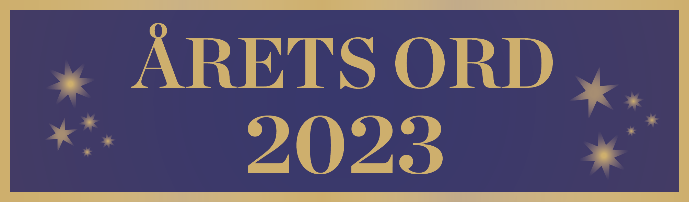
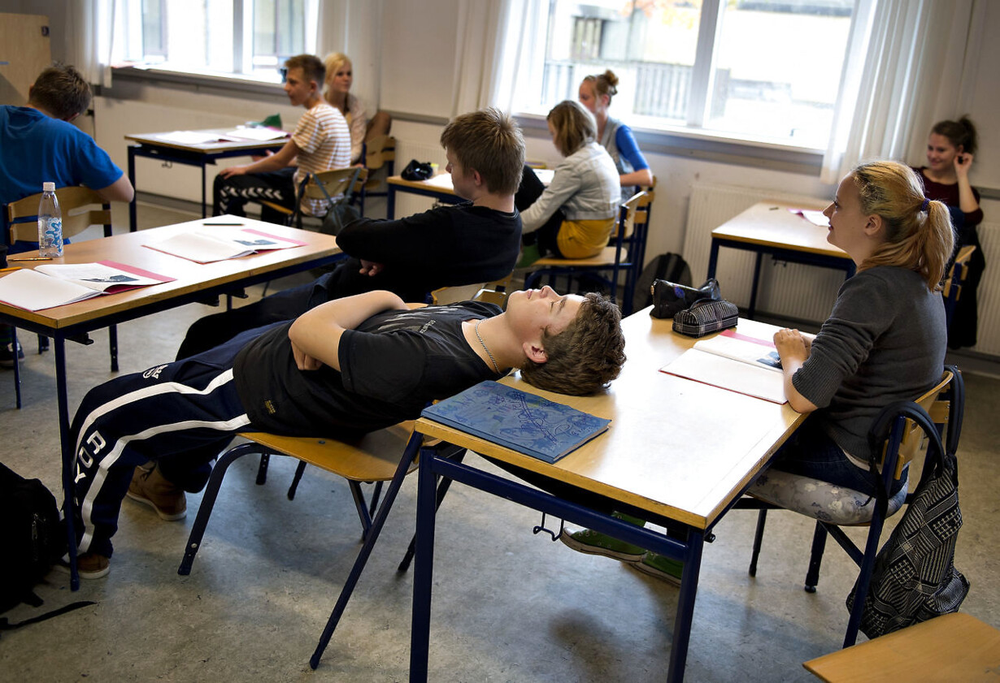

- Mine online-venskaber
- Årets ord 2023
- De lange skoledage
- Når hjernen keder sig
Kl. 9.00-12.30
Før du skriver
Til eleven
Til denne prøve i skriftlig fremstilling har du adgang til internettet.
Du må ikke kommunikere eller dele dine dokumenter med andre under prøven.
Hvis du i din tekst anvender informationer, citater, billeder, ressourcer fra internettet eller fra andre steder, skal du angive kilderne sidst i besvarelsen. Hvis du anvender kilder fra prøveoplægget, behøver du ikke at angive dem i din tekst.
Din tekst vurderes på, hvor godt du udfolder de tre vurderingsdimensioner funktion, indhold og form på en sammenhængende og meningsfuld måde i din tekst.
Se vurderingskriterierne nedenfor.
God arbejdslyst!
Vurderingskriterier til eleven
Der gives én karakter baseret på en helhedsvurdering af tre dimensioner: funktion, indhold og form
|
Vurderings- dimension |
Vurderings- område |
Vurderingsspørgsmål |
| Funktion | Skrivesituation | I hvilken grad fungerer din tekst i den skrivesituation, som opgaven beskriver? |
| Opgavens krav | I hvilken grad opfylder du opgavens krav til afsender, modtager og fremstillingsformer? | |
| Indhold | Mening | I hvilken grad udtrykker din tekst et meningsfuldt indhold? |
| Ressourcer | I hvilken grad bruger du opgaveforlægget, din egen faglige viden og internettet i din tekst? | |
| Form |
Tekstsammen- hæng |
I hvilken grad hænger din tekst sammen sprogligt, og er der velvalgte afsnit og modaliteter? |
| Skrift og andre modaliteter | I hvilken grad bruger du tegnsætning, tekstbehandlingsprogrammets funktioner og ord, så det understøtter den situation, teksten skal bruges i? |
1. Mine online-venskaber
Foreningen Skole og Forældre har bedt dig om at skrive et indlæg om børn og unges online-venskaber til deres hjemmeside.
Formålet med indlægget er at give forældre indblik i, hvad online-venskaber betyder for unge som dig.
Som inspiration skal du læse nedenstående udsagn, der alle siger noget om online-venskaber:
Skriv indlægget til foreningen Skole og Forældres hjemmeside. I din multimodale tekst skal du:
|
2. Årets ord 2023

Sproget afspejler den tid, vi lever i, de begivenheder, der sker, og det, vi er optaget af. "Coronapas", "samfundssind", "klimatosse" er tidligere blevet valgt som årets ord.
Hvilke ord synes du fortæller noget vigtigt om 2023?
Radioprogrammet Klog på Sprog er interesseret i, hvilke ord unge tænker kunne være årets ord. Du vælger at indsende dit forslag, som vil blive læst op i radioen. Som inspiration skal du lytte til uddrag fra programmet, hvor de giver eksempler på årets ord.
Kilde: dr.dk
Skriv dit forslag til Klog på Sprog, som efterfølgende vil blive læst op i radioen. Som forberedelse skal du udvælge tre ord, som du mener skal nomineres til årets ord i 2023. Derudover skal du søge baggrundsviden om, hvorfor netop disse tre ord er kommet ind i det danske sprog. I din tekst skal du:
|
3. De lange skoledage

Foto:pixabay.com
Nogle unge klager over lange skoledage. De oplever ikke, at de kan få fritidsliv og skole til at hænge sammen. Men er skoledagene for lange? Eller handler det om, hvad der sker i løbet af en skoledag?
Klik og læs Josef Al-Mersals debatindlæg om, hvordan han er påvirket af lange skoledage:
Du vælger at skrive personligt til Josef Al-Mersal om dine erfaringer og tanker.
|
Skriv en mail til Josef. I din tekst skal du:
|
4. Når hjernen keder sig
Kender du det at kede sig, og tiden bare slæber sig afsted, sekunder føles som minutter, minutter som timer? Men hvad sker der egentlig med din hjerne, når kedsomheden tager over?
Forestil dig, at du er i praktik på online-magasinet viunge.dk.
Du skal skrive en artikel til magasinets unge læsere for at gøre dem klogere på hjernen og kedsomhed.
Klik og se denne video:
Foto:pixabay.com/video:videnskab.dk
|
Skriv artiklen til viunge.dk Som forberedelse til din tekst skal du se videoen og bruge denne viden i din artikel. I din multimodale tekst skal du:
|